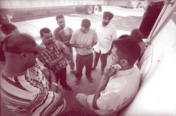

Wobbly Resurgence in the Central Valley
Submitted on Wed, 05/11/2005 - 3:45pm
Meet Joe Hill, By Tom Walsh - Sacramento News and Review Editor's note.
 "Hello?"
"Hello?"
"You've got to get down here right away. They're tearing down the Morrison grocery building."
"And the significance of that is ..."
"Geez. You don't know the story of the Wobblies and Joe Hill?"
I didn't, but I would. I was working as a reporter in Salt Lake City, and soon I would be fascinated by the Joe Hill arrest and execution. Like many people my age, I was woefully under-informed about the history of the radical labor movement in this country.
Joe Hill (actually Hillström) was an organizer for the very independent union known as the Wobblies. The Wobblies were organizing in the dangerous mines in Utah in 1914. Hill was known as the Wobbly troubadour, and he penned many songs that delighted followers and infuriated mine owners.
A grocer named Morrison was killed when shots were fired during a holdup. Two men were seen running from the store. And two men were arrested while fleeing at a nearby rail yard; one was wounded. Both were wanted in Arizona on a robbery charge.
At the same time, Hill got shot (many now believe it was by a jealous husband), and he was turned in by a doctor.
Guess who was charged with the murder. Purely circumstantial evidence somehow led to his conviction. A storm of protest ensued, and even President Woodrow Wilson's request for clemency or a new trial was denied.
Hill was resigned to the fact that he would be put to death by a firing squad. He asked that his body be taken out of state, saying, "I don't want to be caught dead in Utah." And his last message: "Don't mourn--organize."
Hill and other strong characters in the Wobblies make for a fascinating and sad history lesson. Many Wobblies were killed by mobs and vigilantes, and many others were beaten and thrown in jail.
But perhaps more interesting than their history is the Wobblies' resurgence in our area (see below), with an unlikely group of new members.
By Cosmo Garvin - Sacramento News & Review - January 13, 2005.
In a labor battle with roots dating back 100 years, independent truckers and Starbucks employees are now joining the wild and contentious Wobblies.
On a fog-soaked December morning, near an Interstate 5 offramp on the outskirts of Stockton, about a dozen men huddled in a loose circle. Some wore the traditional long beards and Sikh turbans of their native India. The younger men were mostly clean-shaven and sported brand-name windbreakers. To the north was a truck dealership. To the south, shrouded in the fog, was a dog-food factory.
The men spoke animatedly in Punjabi and then broke up, shuffling around the empty lot, talking on cell phones and killing time. Occasionally, a taller man would call them together again for another meeting.
This is what a wildcat truckers strike looks like in the Stockton Valley.
These were independent, short-haul truckers, mostly recent immigrants from India. Although they own their own trucks and technically are self-employed, these drivers usually contract exclusively with one company and depend on that company for all of their work. In this case, the company is Kach Transportation.
But, for three days in December, none of these drivers hauling for Kach went to work. And the company couldn't move goods from the area rail yards to the stores and warehouses in the surrounding communities, like Stockton, Sacramento, Modesto, Woodland and points in between.
There were no angry chants or workers marching around with picket signs. No fiery speeches by bullhorn and no press conference. Just a bunch of fed-up truckers not going to work. And yet these men are part of a unique labor tradition dating back a century.
The only real clues linking them to the tradition were a few signs bearing a slogan from a bygone era--"An injury to one is an injury to all"--planted in the wet ground around the perimeter of the lot.
"The company, they won't talk to us at all," the tall man explained. "We said, 'Come talk to us. You know, we might let go of a few things, you let go of a few things, and it will work out.' But they just said no."
Like most of the Kach drivers, he asked SN&R not to print his name, fearing he would be singled out by employers and not be able to find work. Indeed, the truckers seemed suspicious of reporters generally and had made no efforts to contact the press about their spontaneous strike.
The Kach drivers went on strike December 14, demanding more pay for rising fuel costs and an end to onerous "wait times," during which the drivers must remain idle without pay while their trucks are loaded or unloaded. It was a small strike but the latest in a string of labor actions by short-haul truckers in the last year.
The Stockton drivers claim they sparked a wave of independent-trucker strikes along the West Coast and then across the country in the spring of 2004. "We were the first. Then Oakland, then everywhere," the tall man explained. Truckers as far away as Los Angeles and ultimately Miami and Savannah, Ga., tied up ports and railheads with spontaneous work stoppages.
The drivers, whether in Stockton or Seattle, are an important part of the backbone of the "containerized economy" ferrying goods from ports and rail yards to your local Costco or Wal-Mart, or the myriad warehouses and distributors up and down the West Coast.
The loads they haul could be just about any dry goods, from laundry detergent to toilet paper to children's toys. One load, from Stockton to Sacramento for example, might net a driver $120. The truck operators pay for their own insurance, gas and vehicle maintenance. Often, they are still making payments on their rigs.
By and large, they don't belong to unions.
Or, at least, not the unions you'd expect.
Over the summer, the Kach drivers, and the vast majority of short-haul truckers in the Stockton Valley, recently joined the Industrial Workers of the World (IWW), also known as the Wobblies. The union says it has signed up around 220 of the 350 or so independent truckers working in the area.
Not bad for a union that was considered extinct 10 years ago.
The IWW was founded 100 years ago in 1905. In the 1910s and 1920s, the Wobblies were a fearsome presence in the American labor movement, representing radical unionism in its most militant and subversive form. It stood for anti-capitalist revolution and took as its motto "A world without bosses."
Most of the Sikh truck drivers don't consider themselves radicals. But they found the Wobblies were the only union that could, or would, help them. And although trucking companies have refused to recognize their union, the Wobbly truckers have been busy building the union, making demands and sometimes winning concessions.
Most members live in Stockton, Modesto, Sacramento and other valley towns and drive to work in Stockton. Companies like Kach do the dispatching, working with brokers and the railroads to arrange pickups and deliveries. The truckers then drive their rigs to the Stockton rail yards--the Union Pacific, Santa Fe or Burlington Northern--pick up their loads and deliver them to stores and warehouses anywhere within 150 miles of Stockton.
The drivers are overwhelmingly Indian, and many are recent immigrants. Drivers said this was partly due to the natural networking that occurs in the local Sikh community, with truckers helping their friends and family members get into the business. Others said it's not bad work for immigrants with limited English skills, because interaction with the public is brief at most.
 "Mostly, it's Indian drivers, but we've made some inroads into the Latino community," explained Harjit Gill, not a truck driver but a Punjabi-speaking Wobbly organizer from Chico. "Once we sign [the Latinos] up, we'll have everybody."
It would be a small campaign for a major union like the Teamsters or the California Nurses Association. But to the Wobblies in this country, it's a huge victory. In fact, it is the largest single influx of new members that the Wobblies have seen in several decades. And it's a sign that the IWW gradually is shaking the rust out and becoming something more than an anarchist historical society. And the Wobblies could become a force to reckon with again. Indeed, in 2001, the nationally known law firm Bullivant Houser Bailey was warning its clients, "Employers should beware, the Wobblies are back."
The Stockton truckers' campaign, combined with a small but steady growth of Wobbly memberships in other communities and a high-profile attempt to unionize Starbucks coffee shops on the East Coast, is getting the IWW attention it hasn't seen in years. For Wobbly organizers, it's a nice way to celebrate turning 100.
But on the fourth day of the Wobblies' Kach strike, it became clear the company wasn't budging.
"They said they would only talk to us individually, not as a group," the tall man explained. Rather than submit to one-on-one meetings with the boss, the Kach truckers decided on a more Wobbly-esque strategy of dealing with an intractable employer: They quit hauling for Kach.
"We're going to try our best to put them out of business," Gill explained. "They don't care about workers, so we don't care about them."
Kach managers did not return calls from SN&R. Truckers say that on the day after they stopped work, Kach did offer to negotiate, but the drivers refused to go back to work, in part to send a message.
"We just told them it was too late. If they're going to muck about, we can find work somewhere else," said one driver, who already had lined up a job at another trucking company.
Although the Teamsters voiced support for the spring strikes, the powerful trucking union--an obvious choice to help truckers looking for a better deal--did little actual organizing among the Stockton truck drivers. This is largely because they're independent operators, and federal law doesn't allow them to join unions.
Twenty years ago, these were union jobs, said Chuck Mack, the national director of port operations for the International Brotherhood of Teamsters. "In the '80s, we had the whole Oakland waterfront organized," Mack explained. But then came the deregulation movement of the 1980s. Over time, the carrier companies moved away from employing drivers directly and created a system of independent contractors.
As a result, the drivers aren't technically employees and no longer have the same rights to negotiate as a union. As the working conditions in the trucking industry deteriorated, Mack said, the workforce changed, drawing much more heavily from ethnic minorities and immigrants.
The Teamsters are working with these truckers, but "you have to be very, very careful, or you might run afoul of antitrust laws," Mack said. Federal laws like the Sherman Anti-Trust Act prohibit companies from colluding to set prices. That includes independent business owners and contractors. Conceivably, Mack said, a trucking company could sue a union of independent truckers for violating the laws against price fixing.
"It's completely hypocritical," Mack complained. "That law is over 100 years old. It was intended to protect workers from the JP Morgans and Rockefellers. Now it's being used against these immigrant workers who are just scraping by."
Enter the IWW, with its historic disdain for any federal law it deems "anti-worker." Gill, then living in Chico, teamed up with Bay Area IWW organizers Bruce Valde and Adam Welch. After being invited by a few Sikh truckers who participated in the spring strikes, the group took a chance and went to Stockton to look into the possibility of organizing a truckers union.
Soon they had signed up a majority of the Stockton Valley independent short-haul truckers as members of the IWW. In September, drivers at Patriot Logistics, by then holding IWW union cards, held another strike. They said that company officials had promised them higher pay to make up for increasing gas prices. They also suspected that the company already was collecting higher rates from its customers but wasn't passing the increase on to drivers. "The brokers were paying them, but they weren't giving it to us," said Patriot driver Dewey Obitinalla. "We were each losing about $200 a week." They also sought more pay for that downtime they spent waiting to pick up goods at area rail yards and warehouses.
After staying off the job for three days (and losing three days' pay), the drivers say they won about 80 percent of what they wanted--including a small increase in their basic rates, to cover fuel costs, and an agreement to increase pay for wait times.
The company, however, refuses to acknowledge that any bargaining occurred with the IWW. "It simply didn't happen. We have contracts with individual truck drivers. Those contracts haven't changed and won't change," said Patriot Vice President of Marketing John Tucker from his home in Atlanta, Ga. "We would not sit with a group of drivers and negotiate," Tucker added. "And we certainly wouldn't talk to any union people."
But negotiations did occur, the drivers say. They also contend the manager that negotiated with the drivers no longer works for Patriot because the man was fired. Although Tucker denied that, he refused to elaborate, saying it was a private personnel matter.
Patriot drivers say that, whether the company wants to recognize the union or not, their strike worked.
"It helped. Not a lot, but it helped," said Obitinalla. "This is really the first time I've seen these kinds of demands negotiated. In the five years I've been in this business, my experience is that the managers won't do anything unless they see this kind of unity."
Not a bad result for the price of IWW dues, which are $6 a month. "They don't really make you pay it anyway," Obitinalla remarked.
 Just the mention of the name Industrial Workers of
the World today evokes memories of the early American labor movement in
its most militant, most revolutionary and, in some cases, most terrifying
form.
Just the mention of the name Industrial Workers of
the World today evokes memories of the early American labor movement in
its most militant, most revolutionary and, in some cases, most terrifying
form.
To historians, the IWW means the 1912 strike in Lawrence, Mass., when 20,000 textile workers faced down the state's National Guard, chanting, "We want bread and roses!" Or it evokes the now-forgotten bombing of the California governor's mansion in 1917, blamed on the IWW--though the union to this day disputes the charge. Or the execution of troubadour and IWW organizer Joe Hill in Utah in 1915. Hill was convicted of shooting a shop owner to death during a robbery gone bad. Hill and supporters claimed all along that he was framed and executed only because the government wanted the radical dead.
Of course, the Wobblies (some say the name comes from the "wobble saw" used by loggers in the Pacific Northwest at the turn of the century) also have a history of more joyful forms of subversion. Many Wobblies were hobos and drifters, riding empty rail cars for free all over the country. And Wobbly songwriters like Hill penned popular and irreverent tunes skewering the bosses and celebrating the working class: songs like "Rebel Girl," "Fifty-Thousand Lumberjacks" and "I'm Too Old to Be a Scab." In California, carrying a copy of the Wobblies' Little Red Songbook could land you in jail.
The Wobbly leaders of 1905 would become legendary hell-raisers, leaders like Eugene Debs, Mother Jones and Big Bill Haywood.
Then there's the class of 2005.
"The working class and the employing class still have nothing in common," explained the smiling Gill, updating the preamble to the constitution of the IWW, written in Chicago in 1905.
Then, as now, they advocated "anarcho-syndicalism," in which workers themselves seized the means of production--the factory works, the sawmill, the city buses--and determined for themselves how production would be organized and what working conditions would be.
The Wobblies promoted the idea of the "One Big Union," also called industrial unionism. Rather than splitting workers into trade unions--carpenters, electricians or bricklayers, for example--the Wobblies insisted that all construction workers struggle together to change the construction industry.
And they had little patience for union bureaucracy, fussing over union elections and contracts or asking the government (the National Labor Relations Board, or NLRB) for the right to negotiate.
Instead, they adopted the slogan "Direct action gets the goods." Strikes were to be used early and often. "General strikes" by workers across industries, and hopefully shutting down a whole city, were even better.
And they had a reputation, not entirely deserved, for industrial sabotage. Although some workers did go in for destroying company property, the IWW concept of sabotage tended toward work slowdowns or "working to rule"--meaning adhering to job rules so carefully that work grinds to a halt. Still, Wobbly lore is full of stories of chicanery, of machines mysteriously missing belts or paint being mixed the wrong color by accident. To this day, the Wobblies hold dear their mascot, "Sabo Kitty," an angry black cat with its hair on end, which came to be a symbol for sabotage.
The IWW also became associated, rightly or wrongly, with terrible violence.
Following the governor's- mansion bombing in 1917, 53 Sacramento Wobblies were jailed, and three of them died in custody. But many suspected the bombings actually were carried out by supporters of the local district attorney, Charles Fickert, who had built his career prosecuting Wobblies.
Fickert also sent the notorious Wobbly leader Tom Mooney to jail for allegedly tossing a bomb into a San Francisco Preparedness Day parade, killing 10 people. Again, Mooney's supporters said it was the work of agents provocateur. Mooney was in fact pardoned in 1938 by Governor Culbert Olson.
 At the height of their power before World War I, the
Wobblies boasted more than 100,000 members, who ruled the shipping and
transportation industries. They were the first to advance many causes of
the American labor movement, the first to include people of color in a
union with white workers and the first to fight for the eight-hour day and
the 40-hour week, all things that workers in America came to take for
granted in the late 20th century.
At the height of their power before World War I, the
Wobblies boasted more than 100,000 members, who ruled the shipping and
transportation industries. They were the first to advance many causes of
the American labor movement, the first to include people of color in a
union with white workers and the first to fight for the eight-hour day and
the 40-hour week, all things that workers in America came to take for
granted in the late 20th century.
They also were feared and despised by big companies, the U.S. government and the trade unions of the American Federation of Labor.
"They were a major threat, because they were so strong in these key industries, because they were anarchists, and they totally opposed the war," said Dana Frank, a professor of history at Merrill College. In 1917 and 1918, more than 2,000 Wobblies were jailed, many for criticizing the war.
Government crackdowns and mass arrests during World War I smashed the union, and it never really recovered to its prewar power. "After that, they really turned into a movement to free political prisoners," namely their own members, Frank explained. By 1990, some estimates put IWW membership at around 1,000.
But the IWW did survive into the latter 20th century, mostly in leftist strongholds like the Bay Area and the Pacific Northwest.
Then, the IWW organized a big chunk of the city of Berkeley's curbside recycling program back in 1988. For driver Dominic Moschella, joining a Wobbly shop was a natural move because he was attracted to the union's radical politics. But he also was attracted to the idea of a blue-collar job that paid a decent wage. "Where else can you work 20 or 24 hours a week and make $40,000 a year?" he asked.
In 2002, the Wobblies expanded their membership in the recycling business, organizing the 20-person workforce at Community Conservation Centers where residential recycling is sorted, by hand, into paper, plastic and aluminum streams. After joining the Wobblies, workers there hammered out a contract that increased the wages slightly and included full medical benefits and paid time off.
The most recent Bay Area victory was at Stonemountain and Daughter, a fabric shop on Shattuck Avenue. The workers there, mostly older women who are skilled seamstresses and knitters, formed a union two years ago. Their main complaints were of favoritism, a lack of medical benefits and a lack of respect from the owner.
With organizer Bruce Valde's help, they landed a contract in the summer of 2004. Starting pay was increased, and a regular raise schedule was put in place. The company also has made some initial steps in providing health insurance to its workers.
Whether it's recycling workers or the clerks at the fabric store or truck drivers in the Stockton Valley, Valde said, the IWW radical politics take a backseat.
"These people don't care about the ideology," Valde explained. "They care about having a decent paycheck and a decent place to work. And they want somebody to stand up with them and support them."
The Stockton campaign and the modest gains of shops organized in Berkeley, Portland, Chicago and other places around the country are signs of life not seen from the IWW in years.
"There is certainly a level of activity and a sense of our place in the labor movement that feels very different," said Alexis Buss, the general secretary treasurer of the IWW, headquartered in Philadelphia.
She said that the IWW membership has been gaining in steady, small percentages since the late 1990s. "We just got a big bump this year because of Stockton," she explained, adding that donations have been coming in from union members all over the country to help with the Stockton campaign.
 The Wobblies stress that it's the workers, not the
IWW organizers, who call the shots. "If you want to get something done in
your shop, we're here to help. But we follow their lead," said Berkeley
organizer Valde. And though the IWW has become a full-time job for Valde
and the other Bay Area organizers, they remain unpaid volunteers. Of the
2,000 or so IWW members in the United States, Buss is the only one who
gets a regular paycheck from the union.
The Wobblies stress that it's the workers, not the
IWW organizers, who call the shots. "If you want to get something done in
your shop, we're here to help. But we follow their lead," said Berkeley
organizer Valde. And though the IWW has become a full-time job for Valde
and the other Bay Area organizers, they remain unpaid volunteers. Of the
2,000 or so IWW members in the United States, Buss is the only one who
gets a regular paycheck from the union.
While bottom-up organization is a time-honored Wobbly tradition, so is being in trouble with the law.
Daniel Gross is one of the main IWW organizers trying to get a union in Starbucks in New York City. There, workers at one store won the right to hold a union election from the New York regional office of the NLRB in the summer of 2004. Even pursuing such an election was the subject of much debate among the New York Wobblies, and IWW members around the country, because the union sees the NLRB as mostly useless.
The point became moot, however, when Starbucks appealed the approval of the election to the NLRB higher -ups. The Washington office accepted the appeal, effectively stalling the election for at least two years.
Daniel Gross and other Starbucks workers protested these tactics during the Republican National Convention in New York this past fall. Gross was arrested for blocking the entrance to the store, and Starbucks decided to press charges. His trial is set to begin January 14. Ironically, Gross still works at the store he was arrested in front of. His lawyer, Leonard Weinglass--the famous civil-rights attorney who defended members of the Chicago 8 and Mumia Abu-Jamal--has described the charges against Gross as "politically motivated."
He faces up to six months in jail for disorderly conduct and resisting arrest, though he says his attorney will present plenty of evidence that he did nothing wrong.
"It's all about chilling our First Amendment rights. I have no doubt that if I'm convicted, Starbucks will use this to try and scare workers away from the union," Gross said.
Starbucks spokesperson Audrey Lincoff said that the company had absolutely nothing to do with Gross' criminal case, noting that it was the local district attorney--not Starbucks--that brought the charges against him.
And Lincoff said the company is not anti-union. "We are pro-partner," Lincoff explained. The company refers to all of its employees as "partners."
"We don't try to influence their decisions. We do provide a progressive and flexible work environment for all of our partners."
But the regional NLRB issued an unfair-labor-practices complaint against Starbucks last week, accusing the company of trying to interfere with workers' right to join the union. The complaint includes allegations that the company interrogated employees about their support for the union and promised promotions to workers who withdrew their support for it.
Lincoff wouldn't comment on the complaint, saying Starbucks was still reviewing it.
With the IWW's striking, romantic symbolism and confrontational culture, it's not surprising that younger activists would be attracted to it and would want to dust off the Little Red Songbook and declare it time to "Fire your boss!"
Gill himself, though only 23, is a veteran of protests against multinational corporations and liberalized trade rules. He took to the streets with the Black Bloc anarchists during the biotech conference in Sacramento in June 2003 and said the World Trade Organization (WTO) protests in Seattle 1999 were an awakening for him.
Radical unionism is simply an extension of the work he's done around free trade and multinational corporations. "I know a lot of people my age who are really conscious of the WTO and [the North American Free Trade Agreement]. But they're not standing here in a dirty parking lot" with striking truck drivers, he explained.
"We're back, but in a totally different way," Gill said. "I think you're going to see this union go through something of a transformation. You're going to see younger people and people of color. And you' re going to see a more community-oriented approach to organizing."
For them, the IWW may be an appealing alternative to a labor movement that has had the doldrums for two decades.
But just being alternative won't be enough, says Teamster Chuck Mack. Short-haul truckers, in Stockton and across the country, need all the help they can get, and the IWW is welcome, he said. "But I think it's a little simplistic to say that what they are doing will move the ports and the shippers and get them to open their wallets." Mack said real improvement of working conditions for these truckers requires changing the rules. In fact, Mack testified before a select committee of the California Legislature on January 7, asking lawmakers to change the rules to allow independent truckers to bargain as part of a union. "These [truckers] need help, so whatever works. The IWW is out there doing the right thing, but I think it's going to take a much broader coalition," Mack added.
Still, whether it's the WTO or a single trucking company, Gill puts his faith in direct action.
"Everything in America moves on a truck at some point. An important part of trying to change the way that trade works is having the power to stop trade. That's what we did here. We said until people's rights to survive are adhered to, we're not going to move things for them."
Stopping trade, backing up demands with economic consequences, has always been the Wobbly way.
"I'm an anarcho-syndicalist. This is what we do," Gill explained. "For me, this is another day at work."
This article and its contents are the product of the publisher, and their opinions do not necessarily reflect those of the IWW. It's included here for information purposes only.